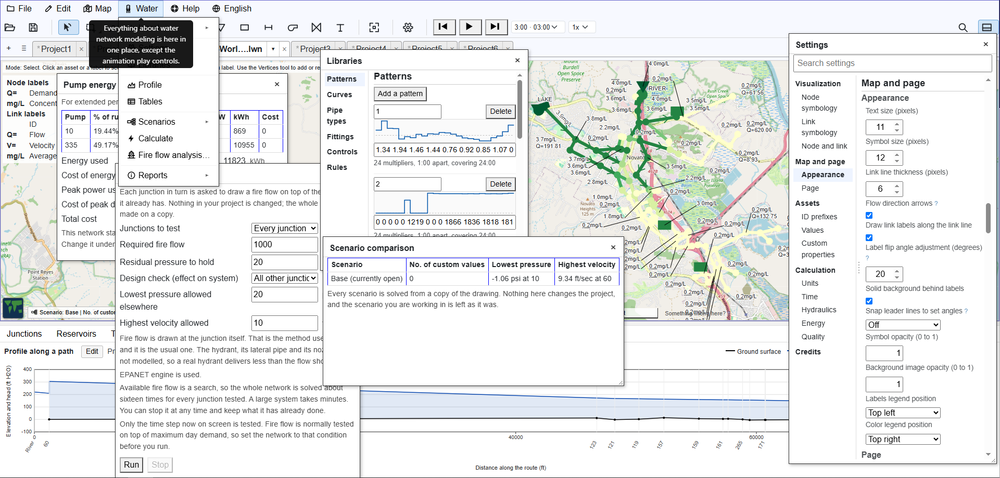

Annotated screenshots
Fifteen pictures of the software doing real work, each with what it is showing and why that matters.
The network in most of these is EPA’s own Net3, placed on the real streets of Novato, California. The one drawn on a site plan is a small commercial development. And everything here is easy for you to reproduce using the provided examples.
All of it, at once
Everything open at the same time, on one network
Settings with its search, the Libraries box, a fire flow analysis, a pump energy report, a scenario comparison, the tables and a hydraulic profile, all live over EPA’s Net3 on the streets of Novato. Nothing here is staged: it is one browser window with one project open in it.

Each of these has a plate of its own further down, where you can read it. This one is not for reading. It is here to answer the question the other fourteen cannot, which is how much of this is one program rather than a list of intentions.
Starting
Seven worked examples, open on arrival
You do not begin with an empty screen. The gallery opens with complete networks, EPA’s reference models among them, that load and solve in one click.

The fastest way to find out whether a tool is any good is to watch it solve something you already know the answer to. That is what these are for.
Your EPANET file opens, and it tells you what it did with it
Importing Net3.inp: 97 junctions, reservoirs and tanks, 119 pipes,
pumps and valves, in GPM, then a plain list of what came across and what did not. (Chemical analysis is now implemented.)

This does not claim to hold everything EPANET holds. It reads the parts it supports, reports every difference rather than dropping anything silently, and writes the file back out again.
Drawing something somebody else has to read
A drawing, not a diagram
A small commercial development on its own site plan: hand-placed labels on leader lines, a title block, and the pipes drawn over the real thing they are in.

Most of the work in a report is not the solve. It is making a page a reviewer can read without you standing next to them.
Scenarios: the same network under different demands
Base and a Daily Flow case, with the three values unique to the scenario counted in the status bar and circled on the map.

A scenario holds only its differences from the base model. Everything else stays in the base model, so fixing a base asset fixes it everywhere.
Putting the model on real ground
Scaled and placed on the town it serves
The model on Novato, California, with its own corner handles and a stated ground scale. You drag, turn and scale it until it sits where it belongs.

You can keep your existing networks in their original coordinate system with their original backdrop or you can convert them to geographic coordinates (latitude and longitude). The image shown is at the final step that drops it onto the world map. Nothing is converted until you confirm, and Cancel puts your original numbers back exactly.
And then the pipes are in the streets
The same model zoomed to street level: Novato Boulevard, the high school, US 101, and the mains running where mains run.

This is the moment a model stops being an abstraction. It is also the moment somebody who is not an engineer can look at your screen and follow what you are saying.
Reading the answers
The map above, the profile below
Pressure by color across the network, and under it the ground surface, the hydraulic grade line and the pressure band along a chosen path: 26 nodes, 79,161 ft.

The profile is the drawing that answers “why is the pressure low up there”, and it is the one an executive understands on sight.
Colors, colors, lovely colors
The ColorBrewer scheme picker over satellite imagery: sequential, diverging and qualitative families, with the band boundaries customizable.

Spectrums that convey clearly which end is more, which side of a middle you are on, or which reading is the good one.
A narrower window
The same network, the same color key, the same settings, in a window about 840 px wide, with the panels stacked into one column.

This is a narrow desktop window, not a phone. What it shows is that at this width the layout reduces by rearranging rather than by hiding. Narrower than this it does hide things; the last two plates are that case.
Over a day and over a file
Controls, read and understood
Six simple controls from a real model (Link 10 OPEN AT TIME 1,
Link 335 OPEN IF Node 1 BELOW 17.1), each marked as understood.

Tanks fill and drain, demands follow patterns, and the bottom pane plays the day back or steps to any moment in it, through the EPANET engine, which is where the run lives. Simple controls are read and honoured, and so are rule-based ones: the engine checks its rule base between time steps, so a rule changes nothing on a steady state analysis, which is the engine’s own behaviour.
The file is yours, and it stays on your machine
The first time you save, the page explains what saving means here: the file is written only when you ask, and the browser asks its own permission first.

Nothing is uploaded unless you turn on a feature that needs it, and each one asks first. There is no account, and no copy of your network on anybody’s server, because there is no server doing the work.
In your own language
Entire interface translated
Romanian: menus, settings, the color key, the status bar and the tooltips. Calculator online gratuit pentru rețele de distribuție a apei.

Twenty-seven languages, and the translation is of the working interface rather than a front page. Some are stronger than others and the quality of each is recorded openly. Newly written text reaches English first and the other languages afterwards.
On a phone
The Water menu open
On display in one frame: the Water menu open directly beneath its respective button, carrying Settings, Libraries, Profile, Tables, Scenarios, Calculate, and the EPANET run report (missing Fire flow and Pump Energy); the network drawn at street level over satellite imagery behind it; the flow color key down the right-hand side; and the units, the friction method, and the scenario stated along the bottom.

And although you of course prefer working on your PC, it works also on a phone in tall mode. It is the same program rather than a cut-down one, the same menu over the same drawing, with the page’s own headings dropped and the menu wording reduced to icons to make it fit.
Find and replace, at phone width
Every pipe whose diameter is 30: thirteen of them, listed, each one a link to itself on the map, with the field for the new value sitting above them, still empty.

Editing a network is not only drawing it. This is one of three places where you can change thirteen pipes in one go, and it is the same desktop interface fitted to a phone screen.
What these pictures are not
They are not all up to date, and they are not everything. They are just fourteen frames to give you some ideas of what you can do with this.
The software is free, it runs in your browser, and nothing you draw leaves your machine except through a feature you turn on, which asks first. Your definitive shopping test is on your own network, and it costs you just a few minutes to upload for a spin.